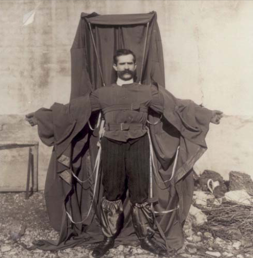
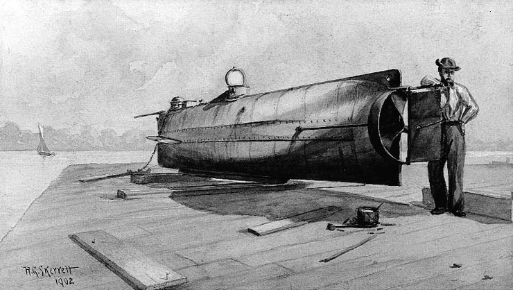
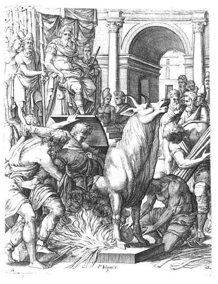

This is a list of inventors whose deaths were in some manner caused by or related to a product, process, procedure, or other innovation that they invented or designed.
DIRECT CASUALTIES
ART
Luis Jiménez (died 2006, age 65) was killed while creating the famous Colorado statue of a blue horse, the Blue Mustang, when a section of it fell on him and severed an artery in his leg.
AUTOMOTIVE
Sylvester H. Roper (1823–1896), inventor of the eponymous steam-powered bicycle, died of a heart attack or subsequent crash during a public speed trial in 1896. It is unknown whether the crash caused the heart attack or the heart attack caused the crash.2
William Nelson (c. 1879−1903), a General Electric employee, invented a new way to motorize bicycles. He then fell off his prototype bike during a test run.3
Francis Edgar Stanley (1849–1918) was killed while driving a Stanley Steamer automobile. He drove his car into a woodpile while attempting to avoid farm wagons travelling side by side on the road.4
Ismail ibn Hammad al-Jawhari (died c. 1003–1010), a Kazakh Turkic scholar from Farab, attempted to fly using two wooden wings and a rope. He leapt from the roof of a mosque in Nishapur and fell to his death.6
Jean-François Pilâtre de Rozier was the first known fatality in an air crash when his Rozière balloon crashed on 15 June 1785 while he and Pierre Romain attempted to cross the English Channel.
Otto Lilienthal (1848–1896) died the day after crashing one of his hang gliders.7
Franz Reichelt (1879–1912), a tailor, fell to his death from the first deck of the Eiffel Tower while testing his invention, the coat parachute. It was his first attempt with the parachute, and he had told the authorities he would first test it with a dummy.8
Aurel Vlaicu (1882–1913) died when his self-constructed airplane,9 Vlaicu II, failed during an attempt to cross the Carpathian Mountains.10
Henry Smolinski (died 1973) was killed during a test flight of the AVE Mizar, a flying car based on the Ford Pinto and the sole product of the company he founded.11
Michael Dacre (died 2009, age 53) died after a crash that occurred while testing his flying taxi device designed to permit fast, affordable travel between regional cities.12
CHEMISTRY
Andrei Zheleznyakov, a Soviet scientist, was developing chemical weapons in 1987 when a hood malfunction exposed him to traces of the nerve agent Novichok 5. He spent weeks in a coma, months unable to walk, and years suffering failing health before dying from its effects in 1992/3.13
Marie Skłodowska Curie, born Maria Salomea Skłodowska, was a Polish and naturalized-French physicist and chemist who conducted pioneering research on radioactivity. On 4 July 1934, she died at the Sancellemoz sanatorium in Passy, Haute-Savoie, from aplastic anaemia believed to have been contracted from her long-term exposure to radiation, some of which was from the devices she created.14
Sabin Arnold von Sochocky invented the first radium-based luminescent paint, but eventually died, in 1928, of aplastic anemia resulting from his exposure to the radioactive material.15
INDUSTRIAL
William Bullock (1813–1867) invented the web rotary printing press.16 17 Several years after its invention, his foot was crushed during the installation of a new machine in Philadelphia. The crushed foot developed gangrene and Bullock died during the amputation.18
MARITIME
Henry Winstanley (1644–1703) built the first lighthouse on the Eddystone Rocks in Devon, England between 1696 and 1698. During the Great Storm of 1703 the lighthouse was completely destroyed with Winstanley and five other men inside. No trace of them was found.19
John Day (c. 1740–1774), English carpenter and wheelwright, died in test of experimental diving chamber.20
Horace Lawson Hunley (1823–1863), Confederate inventor, drowned with seven other crew members during a test of his invention, the first combat submarine, which was later named the H. L. Hunley.21
Thomas Andrews, Jr. (1873–1912) was an Irish born British businessman and shipbuilder. He was managing director and head of the drafting department of the shipbuilding company Harland and Wolff in Belfast, Ireland. As the naval architect in charge of the plans for the ocean liner RMS Titanic, he was travelling on board that vessel during her maiden voyage when the ship hit an iceberg on 14 April 1912. He perished along with more than 1,500 others. His body was never recovered.
MEDICAL
Alexander Bogdanov (1873–1928) was a Russian physician, philosopher, science fiction writer and revolutionary of Belarusian ethnicity who experimented with blood transfusion, attempting to achieve eternal youth or at least partial rejuvenation. He died after he took the blood of a student suffering from malaria and tuberculosis, who may have also been the wrong blood type.22 23
Thomas Midgley, Jr. (1889–1944) was an American engineer and chemist who contracted polio at age 51, leaving him severely disabled. He devised an elaborate system of ropes and pulleys to help others lift him from bed. He became accidentally entangled in the ropes and died of strangulation at the age of 55. However, he is better known for two of his other inventions: the tetraethyl lead (TEL) additive to gasoline, and chlorofluorocarbons (CFCs).
PUBLICITY & ENTERTAINMENT
Karel Soucek (1947–1985) was a Czech professional stuntman living in Canada who developed a shock-absorbent barrel. He died following a demonstration involving the barrel being dropped from the roof of the Houston Astrodome. He was fatally injured when his barrel hit the rim of the water tank meant to cushion his fall.27
RAILWAY
Valerian Abakovsky (1895–1921) constructed the Aerowagon, an experimental high-speed railcar fitted with an aircraft engine and propeller traction, intended to carry Soviet officials. On 24 July 1921, it derailed at high speed, killing 6 of the 22 on board, including Abakovsky.28
ROCKETRY
Max Valier (1895–1930) invented liquid-fuelled rocket engines as a member of the 1920s German rocket society Verein für Raumschiffahrt. On 17 May 1930, an alcohol-fuelled engine exploded on his test bench in Berlin, killing him instantly.29
Mike Hughes (1956–2020) was killed when the parachute failed to deploy during a crash landing while piloting his homemade steam-powered rocket.30

Franz Reichelt (d. 1912) jumped off the Eiffel Tower expecting this contraption to act as a parachute.

Submarine H. L. Hunley.

Perillos being pushed into his brazen bull
POPULAR LEGENDS AND RELATED STORIES
Perillos of Athens (circa 550 BCE), according to legend, was the first to be roasted in the brazen bull he made for Phalaris of Sicily for executing criminals.31 32
Li Si (208 BCE), Prime Minister during the Qin dynasty, was executed by the Five Pains method which some sources claim he had devised.33 34 35 However, the history of the Five Pains is traced further back in time than Li Si.
Wan Hu, a possibly apocryphal36 16th-century Chinese official, is said to have attempted to launch himself into outer space in a chair to which 47 rockets were attached. The rockets exploded, and it is said that neither he nor the chair were ever seen again.
William Brodie, "Deacon Brodie" of 18th century Edinburgh, is reputed to have been the first victim of a new type of gallows of which he was also the designer and builder, but this is doubtful.37
SEE ALSO
Darwin Awards – Award recognising people who have selected themselves out of the gene pool by their own stupidity
Morton, Ella (2014-03-17). "Blucifer, the Murderous Mustang of Denver Airport". Slate. ISSN 1091-2339. Retrieved 2016-08-06.
"Died in the Saddle", Boston Daily Globe, p. 1, 2 June 1896
"Killed By Own Invention – While Trying Motor Bicycle He Had Made, Schenectady Man Meets Death". New York Times. 4 October 1903. Retrieved 22 November 2014.
Doris A. Isaacson, ed. (1970). Maine: A Guide "Down East" (second ed.). Rockland, Maine: Courier-Gazette, Inc. Maine League of Historical Societies and Museums. p. 386. (First edition).
"F. S. Duesenberg Dies of Auto Injury". New York Times. 27 July 1932. p. 17.
Boitani, Piero; Boitani, Professor of Comparative Literature Piero (2007). google.com Piero Boitani, Winged words: flight in poetry and history. University of Chicago Press, 2007. p. 38. ISBN 9780226065618. Retrieved 22 November 2014.
Biography of Otto Lilienthal Lilienthal Museum
2003 Personal Accounts Darwin Awards
Great Britain Patent GB191026658
Ralph S. Cooper, D.V.M. "Aurel Vlaicu at www.earlyaviators.com". Retrieved 22 November 2014.
Morris, Neil (2010). From Fail to Win, Learning from Bad Ideas: Transportation. ISBN 978-1-4109-3911-1.
"British inventor dies in crash on test flight of his flying taxi". The Evening Standard. Archived from the original on 20 August 2009. Retrieved 22 November 2014.
"'It's got me': the lonely death of the Soviet scientist poisoned by novichok". The Guardian. Retrieved 27 March 2018.
"Marie Curie". www.mariecurie.org.uk. Retrieved 27 September 2020.
"Radium paint takes its inventor's life; Dr. Sabin A. von Sochocky Ill a Long Time, Poisoned by Watch Dial Luminant. 13 Blood Transfusions. Death Due to Aplastic Anemia – Women Workers Who Were Stricken Sued Company". The New York Times. 15 November 1928.
"United States Patent 61996". Retrieved 22 November 2014.
"United States Patent 100,367". Retrieved 22 November 2014.
"Inventors killed by their own inventions". Discovery News. Retrieved 2010-10-30.
"Eddystone Lighthouse History". Eddystone Tatler Ltd. Archived from the original on 2 May 2006. Retrieved 7 September 2006.
Churchill, Dennis (2011). "The First Submariner Casualty" (PDF). In Depth (32): 5–6. Archived from the original (PDF) on 23 July 2011. Retrieved 7 June 2011.
"The Birth of Undersea Warfare – H.L. Hunley". Undersea Warfare: The Official Magazine of the U.S. Submarine Force. United States Navy. September 17, 2011. Archived from the original on October 16, 2012.
"Transfusion Medical Reviews". 2007: 337–340.
Huestis DW (2007). "Alexander Bogdanov: the forgotten pioneer of blood transfusion". Transfus Med Rev. 21 (4): 337–340. doi:10.1016/j.tmrv.2007.05.008. PMID 17900494.
Bryson, Bill. A Short History of Nearly Everything. (2003) Broadway Books, US. ISBN 0-385-66004-9
Alan Bellows (2007-12-08). "The Ethyl-Poisoned Earth". Damn Interesting.
"Milestones, Nov. 13, 1944" Time, November 13, 1944
Associated Press (21 January 1985). "35,000 Watch as Barrel Misses Water Tank : 180-Ft. Drop Ends in Stunt Man's Death". Los Angeles Times. Retrieved 18 August 2012.
Alexey Abramov / Алексей Абрамов By the Kremlin Wall / У кремлёвской стены Moscow / М., Politizdat / Политиздат 1978 pp./стр. 399 (in Russian)
"American Institute of Aeronautics and Astronautics". Archived from the original on 26 December 2011. Retrieved 22 November 2014.
Silverman, Hollie (February 23, 2020). "Daredevil 'Mad Mike' Hughes dies while attempting to launch a homemade rocket". CNN. Retrieved 23 February 2020.
"Perillos of the Brazen Bull". Archived from the original on 16 December 2012. Retrieved 25 July 2010.
"The Brazen Bull". Retrieved 1 October 2011.
Guisso, R. W. L., The first emperor of China, New York : Birch Lane Press, 1989. ISBN 1-55972-016-6. Cf. p.37
Fu, Zhengyuan, Autocratic tradition and Chinese politics, Cambridge University Press, 1993. Cf. p.126
"The Civilization of China, Chapter II: Law and Government". Archived from the original on 11 August 2015. Retrieved 11 August 2011.
Williamson, Mark (2006). Spacecraft Technology: The Early Years. IET. ISBN 9780863415531.
Roughead, William (1951). Classic Crimes: A Selection from the Works of William Roughead. London: Cassell. ISBN 0394716485.